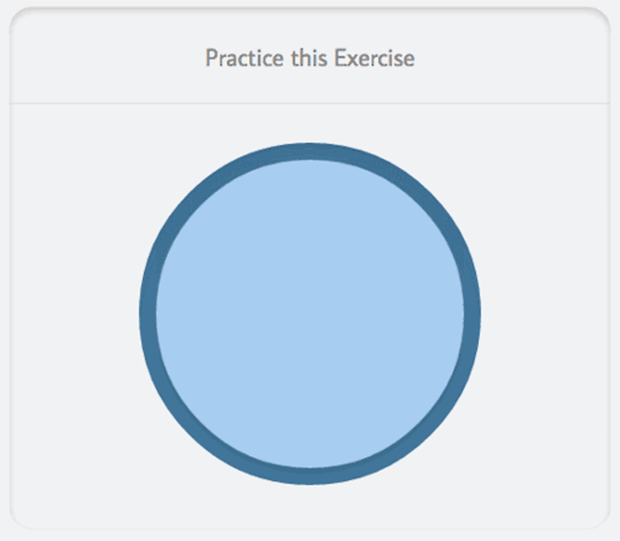

Si estás estresada, puede ser difícil disfrutar tu vida en el presente. Prueba estos ejercicios relajantes y marca los que le sean útiles.
Meditación de respiración
Solo traer tu conciencia a tu respiración puede ser calmante. A medida que inhales, hazte consiente de tu inhalación, y al exhalar, hazte consiente de tu exhalación. Naturalmente, tu atención se desviará. Cuando notes eso, simplemente regresa tu atención suavemente a la respiración, tan pronto como sea necesario
Utiliza esta imagen de abajo para practicar respiración rítmica.
Sintonizando tus cinco sentidos
Siéntate en una posición cómoda con los pies plantados en el suelo. Apoya tus manos sobre tus piernas. Observe tu respiración, en la manera que estés respirando. Luego, comienza a poner atención a cada uno de tus cinco sentidos, uno a la vez. Observe cómo se activa cada sentido en ese momento. No importa en qué orden vayas